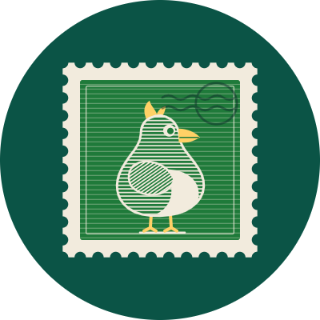

Citaly, mi proyecto principal
Reservar en cualquier lugar posible, en un par de toques.
Citaly es una app web para descubrir negocios cercanos y reservar un turno o una mesa. El
cliente elige servicio, profesional, fecha y hora, o escoge su mesa en el plano del local. El dueño gestiona
su ficha, sus citas y sus opiniones desde su propio panel. Todo el frontend fue mi trabajo, todos y
cada uno de los detalles; el backend lo trabaja un compañero de equipo.
En qué punto está: la demo pública ya funciona y se publica sola en cada cambio.
Ahora mismo estamos conectándola con el backend (Node.js y PostgreSQL) antes de abrirla a negocios reales.
Más de 20 pantallas en React 19
Descubre con ranking y búsqueda, ficha del local, tres flujos de reserva, mis citas, favoritos,
notificaciones, perfil y el panel del dueño. Rutas cargadas por demanda con React Router 7.
Plano de mesas interactivo
El dueño dibuja su local con un editor propio y el cliente reserva su mesa sobre el plano, con zoom y
controles accesibles (ARIA).
PWA que funciona sin conexión
Instalable en Android e iPhone. Service worker con Workbox que guarda la app y las fotos, y actualiza
en silencio solo cuando no interrumpe al usuario.
Rendimiento medido
En Lighthouse: 50 ms de bloqueo total (TBT) y 0 de desplazamiento visual (CLS). Imágenes con tamaño
justo, fuentes WOFF2 y esqueletos de carga.
Probado y publicado solo
66 pruebas con Vitest sobre las reglas de citas y horarios, ESLint limpio y despliegue continuo con
GitHub Actions.
Listo para compartir
Open Graph, datos estructurados JSON-LD, sitemap y título por pantalla, para que cada local se vea bien
al mandarlo por WhatsApp.